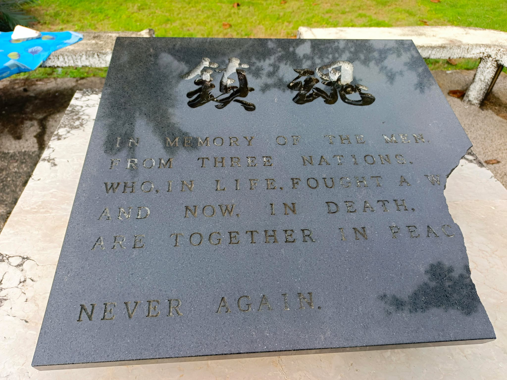

Dumpao Beach Resort
Dumpao Beach, located in Sapao, Guiuan, is a tranquil spot perfect for those who love nature and minimalism. Known for its long stretch of white sand and clear shallow waters, the beach is ideal for swimming, beach games, bonfires, and even camping. Its open-air cottages offer basic amenities, intentionally without modern distractions like televisions or radios, to encourage visitors to disconnect and enjoy the natural surroundings.
According to Mrs. Natea Morero, before Dumpao Beach became known for its cottages and coastal charm, the area was once filled with towering coconut trees. These trees formed a lush landscape until they were all destroyed by Typhoon Yolanda in 2013, one of the strongest storms ever to hit the Philippines. The devastation left the land bare, but it also marked the beginning of a transformation. The ownership of Dumpao Beach belongs to her cousin, Pio Badanoy. However, the original owner was his mother, Florencia Gagaboan, who played a key role in the development and care of the area. After the destruction caused by Typhoon Yolanda, cottages began to be built on the beach, giving rise to what is now a growing tourist destination. Interestingly, even before the typhoon, Dumpao was already a popular spot for locals who came to swim and relax, with a few cottages already in place.She once owned a large cottage myself, and tourists from Borongan used to visit. At that time, they even had karaoke and dance areas for entertainment. Unfortunately, all of that was lost to the storm. Despite the setbacks, the spirit of Dumpao lives on. From its humble beginnings as a coconut grove to its emergence as a modest beach destination, Dumpao Beach continues to grow and shaped by history, resilience, and community.

Dumpao holds historical significance as well. The highest-ranking Japanese officials once used the site as a landmark during World War II, and it later became a burial ground. Although she was only around three years old at the time and did not witness the burials myself, the stories have been passed down through the years. She also wasn't present when the Japanese forces arrived, as she was living with my parents in Dolores, Eastern Samar at the time. Although Dumpao is not an official port, it has become a spot for some local fishermen due to the abundance of fish and seafood in the surrounding waters.
